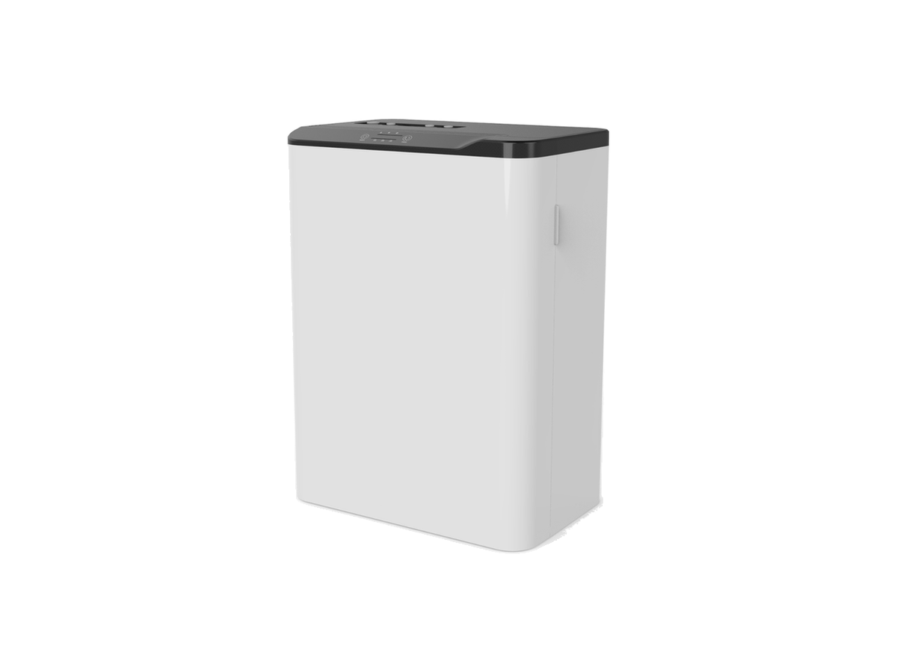

シンク下設置型
シンク下設置型RP-U07
400～600 GPDシンク下RO浄水器
SKU: RP-U07
MOQ：お問い合わせ時に確認
ホーム/製品/シンク下ROシステム/ RP-U11

シンク下ROシステム
3カートリッジRO浄水器 (AM606R)
RP-U11は、RP-U11-1（AM606R、600/800/1000G、高さ427 mm、定格容量6000 L）を中心とする3カートリッジのシンク下ROファミリーで、RP-U11-2（M906R、固定1000G、高さ400 mm）に加え、より高容量のバリエーション2種、RP-U11-3（AM901R）とRP-U11-4（AM902R）があります。仕様はモデル・ご注文ごとに確認済みです。
電圧／周波数は対象国に合わせて設定可能です。その他の構成は注文ごとに確認します。
RP-U11は、RP-U11-1（AM606R）メインオプション（600 / 800 / 1000 GPD、315 × 203 × 427 mm、定格純水量6000 L）を中心とする3カートリッジのシンク下ROファミリーです。RP-U11-2（M906R）固定1000 GPDオプション（315 × 203 × 400 mm、2.6 L/min、4500 L）と、より高容量のオプション2種、RP-U11-3（AM901R、1000 / 1200 GPD）とRP-U11-4（AM902R、800 / 1000 GPD）もあります。メインオプションは≤53 dB(A)、純水・排水比2:1、定格電力65 / 95 / 130 Wで動作します。容量選択ができる静かなシンク下ROファミリーをお求めのブランドオーナー向けです。
最小注文数量はいくつですか？
初回注文はモデルあたり200台、再注文は500台です。
大口注文の前にサンプルを注文できますか？
はい。サンプルは15日でご用意できます。サンプル費用は初回大口注文時に返金されます。大口注文はサンプル承認後40日で出荷し、FOB深圳条件となります。
どのオプションを選ぶべきですか？
RP-U11でお見積もりのうえ、オプションをご指定ください：RP-U11-2 1000G、RP-U11-1 600/800/1000G、RP-U11-3 1000/1200G、またはRP-U11-4 800/1000G。メインオプションはRP-U11-1 600/800/1000Gです。
4つのオプション — RP-U11でお見積もりのうえ、オプションをご指定ください（RP-U11-2 1000G、RP-U11-1 600/800/1000G、RP-U11-3 1000/1200G、RP-U11-4 800/1000G）。
バリアント画像にホバーすると仕様が表示されます。タッチ画面では画像をタップしてください。


各バリエーションの仕様をすべて並べて表示。下の仕様表にメインオプションの値を示します。
| 仕様 | RP-U11-1 — 600/800/1000G (AM606R) | RP-U11-2 — 1000Gバリエーション (M906R) | RP-U11-3 — 1000/1200Gバリエーション (AM901R) | RP-U11-4 — 800/1000Gバリエーション (AM902R) |
|---|---|---|---|---|
| RO容量 | 600 / 800 / 1000 GPD | 1000 GPD | 1000 / 1200 GPD | 800 / 1000 GPD |
| 定格流量 | ご注文ごとに確認済みです | 2.6 L/min | ≥2.62 L/min | ≥2.1 / 2.62 L/min |
| ろ過 | PP＋C＋RO＋ポストカーボン | PPC + RO + C | PPC＋RO＋ポストカーボン | PP・カーボンファイバー＋RO＋ポストカーボン |
| 純水：排水 | 2:1 | ご注文ごとに確認済みです | 排水ゼロ | 2:1 |
| 騒音 | ≤53 dB(A) | ご注文ごとに確認済みです | ≤53 dB(A) | ≤53 dB(A) |
| 定格出力 | 65 / 95 / 130 W | ご注文ごとに確認済みです | 120 W | 90 W |
| 寸法 (W×D×H) | 315 × 203 × 427 mm | 315 × 203 × 400 mm | 440 × 158 × 430 mm | 440 × 135 × 400 mm |
| 入口 | 0.1–0.4 MPa; 5–38°C | 0.1–0.4 MPa / 0.4–0.8 MPa | 0.1–0.4 MPa; 5–38°C | 0.1–0.4 MPa; 5–38°C |
| 定格浄水量 | 6000 L | 4500 L | ご注文ごとに確認済みです | ご注文ごとに確認済みです |
| 電圧／周波数 | 対象国に合わせて設定可能 | 対象国に合わせて設定可能 | 対象国に合わせて設定可能 | 対象国に合わせて設定可能 |
ROPureOEMカタログの仕様 11 行。
| RO容量 | 600 / 800 / 1000 GPD |
|---|---|
| 定格流量 | ご注文ごとに確認済みです |
| 定格浄水量 | 6000 L |
| ろ過 | PP＋C＋RO＋ポストカーボン |
| 寸法 | 315 × 203 × 427 mm |
| 純水：排水 | 2:1 |
| 騒音 | ≤53 dB(A) |
| 定格出力 | 65 / 95 / 130 W |
| 入口 | 0.1–0.4 MPa; 5–38°C |
| 電圧／周波数 | 対象国に合わせて設定可能 |
| その他の構成 | ご注文ごとに確認済みです |
仕様はROPureOEMカタログに基づいています。値がまだ確認されていない場合は「注文ごとに確認」と記載しています。未確認の数値は公表しません。